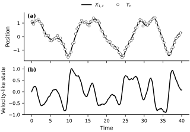
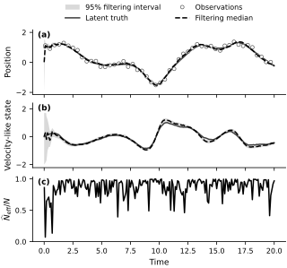
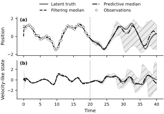

Particle filtering for a stochastic Duffing oscillator#
A particle filter updates a distribution over an unobserved state as measurements arrive. This example applies the bootstrap filter from the DAX package (Predictive Science Laboratory, n.d.) to a stochastic Duffing oscillator. The position is observed with noise, while a velocity-like state must be reconstructed from the dynamics and the position measurements.
State-space model#
The deterministic forced Duffing oscillator is described by
The parameters \(\delta\), \(\alpha\), and \(\beta\) determine the damping and restoring force. The periodic input has frequency \(\omega\) and amplitude \(\gamma\). The negative linear stiffness \(\alpha=-1\) and positive cubic stiffness \(\beta=1\) produce a bistable restoring force. The filtering task treats every model parameter as known and reconstructs the time-dependent state.
To represent unresolved dynamics, define the state \(\boldsymbol{X}_t=(X_{1,t},X_{2,t})^{\mathsf T}\), where \(X_1\) is position and \(X_2\) is a velocity-like state. The control \(u(t)=\cos(\omega t)\) is dimensionless, and \(\gamma\) remains the forcing amplitude. The Itô model is
The Brownian motions \(W_1\) and \(W_2\) are independent. In the deterministic limit \(\sigma_x=0\), \(X_2=\dot X_1\); with direct Brownian forcing on position, \(X_1\) is not differentiable and this equality is no longer literal.
# Define the right-hand side, deterministic part of the Duffing oscillator
class DuffingControl(dax.ControlFunction):
omega: jax.Array
def __init__(self, omega):
self.omega = jnp.array(omega)
def _eval(self, t):
# Hold the forcing frequency fixed.
omega = jax.lax.stop_gradient(self.omega)
return jnp.cos(omega * t)
# Define the stochastic differential equation
class Duffing(dax.StochasticDifferentialEquation):
alpha: jax.Array
beta: jax.Array
delta: jax.Array
gamma: jax.Array
log_sigma_x: jax.Array
log_sigma_v: jax.Array
@property
def sigma_x(self):
return jnp.exp(self.log_sigma_x)
@property
def sigma_v(self):
return jnp.exp(self.log_sigma_v)
def __init__(self, alpha, beta, gamma, delta, sigma_x, sigma_v, u):
super().__init__(control_function=u)
self.alpha = jnp.array(alpha)
self.beta = jnp.array(beta)
self.delta = jnp.array(delta)
self.gamma = jnp.array(gamma)
self.log_sigma_x = jnp.log(sigma_x)
self.log_sigma_v = jnp.log(sigma_v)
def drift(self, x, u):
# Hold the forcing amplitude fixed.
gamma = jax.lax.stop_gradient(self.gamma)
return jnp.array([x[1], -self.delta * x[1] - self.alpha * x[0] - self.beta * x[0] ** 3 + gamma * u])
def diffusion(self, x, u):
# Hold the diffusion amplitudes fixed.
sigma_x = jax.lax.stop_gradient(self.sigma_x)
sigma_v = jax.lax.stop_gradient(self.sigma_v)
return jnp.array([sigma_x, sigma_v])
The numerical example uses \(\omega=1.2\), \(\alpha=-1\), \(\beta=1\), \(\delta=0.3\), and \(\gamma=0.5\). Independent process noise acts on position and the velocity-like state with diffusion amplitudes \(\sigma_x=0.01\) and \(\sigma_v=0.05\).
omega = 1.2
alpha = -1.0
beta = 1.0
delta = 0.3
gamma = 0.5
sigma_x = 0.01
sigma_v = 0.05
u = DuffingControl(omega)
true_sde = Duffing(alpha, beta, gamma, delta, sigma_x, sigma_v, u)
The synthetic path begins at the fixed state \(\boldsymbol{X}_0=(1,0)^{\mathsf T}\). The filter does not receive this value. It begins from the deliberately broad prior \(\boldsymbol{X}_0\sim\mathcal{N}(\boldsymbol{0},I_2)\) and must use the observations to localize the state.
# True initial conditions
true_x0 = jnp.array([1.0, 0.0])
At each positive observation time \(t_n\), only the position is measured:
The velocity-like state \(X_{2,n}\) therefore remains latent. The measurement errors are independent of the process noise and the initial state.
class NormalizedGaussianLikelihood(dax.GaussianLikelihood):
"""Gaussian likelihood with its normalizing constant included."""
def _log_prob(self, y, x, u):
mean = self.observation_function(x, u)
standardized = (y - mean) / self.sigma
return -0.5 * jnp.sum(
standardized**2 + 2.0 * self.log_sigma + jnp.log(2.0 * jnp.pi)
)
observation_function = dax.SingleStateSelector(0)
s = 0.1
observation_likelihood = NormalizedGaussianLikelihood(s, observation_function)
The filter advances the continuous-time model with Euler–Maruyama. The quantities \(\sigma_x\) and \(\sigma_v\) are continuous-time diffusion amplitudes, not discrete-time variances.
For a step from \(t_{n-1}\) to \(t_n=t_{n-1}+\Delta t\), the implementation evaluates the control at the left endpoint, \(u_{n-1}=u(t_{n-1})\). Euler–Maruyama gives
where \(Z_{1,n}\) and \(Z_{2,n}\) are independent standard normal variables. With \(\boldsymbol{x}_n=[x_n,v_n]^{\mathsf{T}}\), the transition density is
The transition density, Gaussian initial prior, and position likelihood define the complete discrete-time state-space model. The local transition class below evaluates the same normalized Gaussian density that it samples, including the \(\sqrt{\Delta t}\) scaling needed by density-based algorithms.
class EulerMaruyamaTransition(dax.EulerMaruyama):
"""Euler--Maruyama transition with a normalized Gaussian log density."""
def _log_prob(self, x_next, x_prev, u):
mean = x_prev + self.sde.drift(x_prev, u) * self.dt
scale = self.sde.diffusion(x_prev, u) * jnp.sqrt(self.dt)
standardized = (x_next - mean) / scale
return -0.5 * jnp.sum(
standardized**2 + 2.0 * jnp.log(scale) + jnp.log(2.0 * jnp.pi)
)
dt = 0.1
initial_distribution = dax.DiagonalGaussian(
jnp.array([0.0, 0.0]),
jnp.array([1.0, 1.0])
)
ssm = dax.StateSpaceModel(
initial_distribution,
EulerMaruyamaTransition(true_sde, dt=dt),
observation_likelihood
)
Synthetic observations#
The latent path is generated over \(0\leq t\leq40\) with outputs every \(\Delta t=0.1\). The simulator uses an internal step of \(0.05\), while the filter uses one Euler–Maruyama step per observation interval. This difference prevents the inference calculation from merely replaying the exact numerical path generator.
# Define the length of the simulation
t0 = 0.0
t1 = 40.0
# Generate synthetic data
key, path_key, observation_key = jr.split(key, 3)
sol = true_sde.sample_path(path_key, t0, t1, true_x0, dt=dt, dt0=0.05)
xs = sol.ys
ts = sol.ts
us = u(ts)
observation_keys = jr.split(observation_key, xs.shape[0] - 1)
ys = observation_likelihood.sample(xs[1:], us[:-1], observation_keys)
ts_obs = ts[1:]
fig, ax = new_figure(
size="full_standard", nrows=2, ncols=1, sharex=True
)
ax[0].plot(ts, xs[:, 0], color="black", label=r"$X_{1,t}$")
ax[0].plot(
ts_obs,
ys,
linestyle="none",
marker="o",
markevery=4,
markerfacecolor="white",
markeredgecolor="0.35",
markeredgewidth=0.7,
label=r"$Y_n$",
)
ax[0].set_ylabel("Position")
ax[0].legend(
loc="lower center", bbox_to_anchor=(0.5, 1.02), ncol=2
)
ax[1].plot(ts, xs[:, 1], color="black")
ax[1].set_xlabel("Time")
ax[1].set_ylabel("Velocity-like state")
label_panels(ax)
finalize_axes(ax)
plt.show()
{kind=link}

Fig. 65 Synthetic stochastic Duffing data. (a) The solid curve is the latent position and open circles show every fourth noisy position measurement for legibility. (b) The latent velocity-like state is not observed. Every measurement, including those not marked, is available to the filtering calculation.#
Bootstrap filtering#
The filter assimilates the first 200 measurements, covering \(t_1=0.1\) through \(t_{200}=20\). The array of training controls contains the corresponding left-endpoint values \(u_0,\ldots,u_{199}\). At every step, the bootstrap filter resamples the current approximation, propagates each particle through the transition model, and weights the propagated particles by the new position likelihood. The returned trajectory contains the prior approximation at \(t_0\) followed by 200 filtering distributions.
class IndependentKeyBootstrapFilter(dax.BootstrapFilter):
"""Bootstrap filter with separate resampling and propagation keys."""
@eqx.filter_jit
def filter(self, ssm, controls, observations, key):
def step(carry, control_observation):
pa, step_key, log_likelihood = carry
control, observation = control_observation
step_key, resampling_key, propagation_key = jr.split(step_key, 3)
resampled_pa = pa.resample(resampling_key)
particle_keys = jr.split(propagation_key, self.num_particles)
particles_next = ssm.transition.sample(
resampled_pa.particles, control, particle_keys
)
log_weights_next = ssm.likelihood.log_prob(
observation, particles_next, control
)
log_increment = (
jax.scipy.special.logsumexp(log_weights_next)
- jnp.log(self.num_particles)
)
pa_next = dax.ParticleApproximation(
particles_next, log_weights_next
).normalize()
return (
pa_next,
step_key,
log_likelihood + log_increment,
), pa_next
key, initial_key = jr.split(key)
initial_keys = jr.split(initial_key, self.num_particles)
pa0 = dax.ParticleApproximation(ssm.x0.sample(initial_keys))
initial = (pa0, key, jnp.array(0.0))
(_, _, log_likelihood), pas_rest = jax.lax.scan(
step, initial, (controls, observations)
)
pas = dax.TrajectoryParticleApproximation.make_from_init_and_rest(
pa0, pas_rest
)
return pas, log_likelihood
num_train_transitions = 200
us_train = us[:num_train_transitions]
ys_train = ys[:num_train_transitions]
ts_train_state = ts[:num_train_transitions + 1]
ts_train_obs = ts_obs[:num_train_transitions]
num_particles = 10_000
particle_filter = IndependentKeyBootstrapFilter(num_particles=num_particles)
key, subkey = jr.split(key)
pas, log_marginal_likelihood = particle_filter.filter(
ssm, us_train, ys_train, subkey
)
key, subkey = jr.split(key)
lower, median, upper = pas.get_credible_interval(subkey)
effective_sample_size = 1.0 / jnp.sum(pas.weights**2, axis=1)
ess_fraction = effective_sample_size / num_particles
position_rmse = jnp.sqrt(
jnp.mean((median[:, 0] - xs[:num_train_transitions + 1, 0]) ** 2)
)
velocity_rmse = jnp.sqrt(
jnp.mean((median[:, 1] - xs[:num_train_transitions + 1, 1]) ** 2)
)
print(f"Estimated log marginal likelihood: {float(log_marginal_likelihood):.1f}")
print(f"Filtering-median RMSE: position={float(position_rmse):.3f}, "
f"velocity-like state={float(velocity_rmse):.3f}")
print(f"Minimum normalized ESS: {float(jnp.min(ess_fraction[1:])):.3f}")
fig, ax = new_figure(
size="full_tall", nrows=3, ncols=1, sharex=True
)
ax[0].fill_between(
ts_train_state, lower[:, 0], upper[:, 0],
facecolor="0.85", edgecolor="none", label="95% filtering interval"
)
ax[0].plot(
ts_train_state, xs[:num_train_transitions + 1, 0],
color="0.25", linestyle="-", label="Latent truth"
)
ax[0].plot(
ts_train_obs, ys_train, linestyle="none", marker="o", markevery=4,
markerfacecolor="white", markeredgecolor="0.35", markeredgewidth=0.7,
label="Observations"
)
ax[0].plot(
ts_train_state, median[:, 0], color="black", linestyle="--",
label="Filtering median"
)
ax[0].set_ylabel("Position")
ax[0].legend(
loc="lower center", bbox_to_anchor=(0.5, 1.02), ncol=2
)
ax[1].fill_between(
ts_train_state, lower[:, 1], upper[:, 1],
facecolor="0.85", edgecolor="none"
)
ax[1].plot(
ts_train_state, xs[:num_train_transitions + 1, 1],
color="0.25", linestyle="-"
)
ax[1].plot(
ts_train_state, median[:, 1], color="black", linestyle="--"
)
ax[1].set_ylabel("Velocity-like state")
ax[2].plot(ts_train_state, ess_fraction, color="black")
ax[2].set_ylim(0.0, 1.03)
ax[2].set_xlabel("Time")
ax[2].set_ylabel(r"$\widehat{N}_{\mathrm{eff}}/N$")
label_panels(ax)
finalize_axes(ax)
plt.show()
Estimated log marginal likelihood: 148.5
Filtering-median RMSE: position=0.088, velocity-like state=0.106
Minimum normalized ESS: 0.072
{kind=link}

Fig. 66 Bootstrap-filter results through \(t=20\). (a) Position observations, latent truth, filtering median, and 95% filtering credible interval. (b) Latent velocity-like truth, filtering median, and credible interval. (c) Effective sample size after each likelihood update, divided by the 10,000-particle ensemble size. The low ESS after the first observation reflects the intentionally diffuse initial prior.#
The position observations rapidly move the particles from the diffuse initial prior toward the realized trajectory. The same updates also reconstruct the unobserved velocity-like state because the transition model couples the two state components. The effective sample size is lowest during the initial correction and then remains high for most updates. A low post-update ESS means that the observation concentrated the weights on relatively few particles; this implementation resamples those weights before the next propagation step.
Forecasting without new observations#
At \(t=20\), the observation updates stop. The forecast starts from the filtering distribution at that time and repeatedly applies the stochastic transition model. It therefore approximates \(p(\boldsymbol{X}_t\mid y_{1:200},u_{0:t-1})\) for \(t>20\) with the model parameters held fixed. No held-out observation is used to recenter the forecast.
ts_forecast = ts[num_train_transitions:]
us_forecast = us[num_train_transitions:-1]
key, resampling_key, propagation_key, interval_key = jr.split(key, 4)
start_particles = pas[-1].resample(resampling_key).particles
step_keys = jr.split(propagation_key, us_forecast.shape[0])
def forecast_step(particles, control_and_key):
control, step_key = control_and_key
particle_keys = jr.split(step_key, particles.shape[0])
particles_next = ssm.transition.sample(particles, control, particle_keys)
return particles_next, particles_next
_, future_particles = jax.lax.scan(
forecast_step, start_particles, (us_forecast, step_keys)
)
forecast_particles = jnp.concatenate(
[start_particles[None, :, :], future_particles], axis=0
)
forecast_pa = dax.TrajectoryParticleApproximation(
forecast_particles, resampled=True
)
lower_forecast, median_forecast, upper_forecast = (
forecast_pa.get_credible_interval(interval_key)
)
held_out_truth = xs[num_train_transitions + 1:]
forecast_coverage = jnp.mean(
(held_out_truth >= lower_forecast[1:])
& (held_out_truth <= upper_forecast[1:]),
axis=0,
)
print(
"Pointwise held-out coverage: "
f"position={float(forecast_coverage[0]):.3f}, "
f"velocity-like state={float(forecast_coverage[1]):.3f}"
)
fig, ax = new_figure(
size="full_standard", nrows=2, ncols=1, sharex=True
)
for state_index in range(2):
ax[state_index].fill_between(
ts_train_state,
lower[:, state_index],
upper[:, state_index],
facecolor="0.90",
edgecolor="none",
)
ax[state_index].fill_between(
ts_forecast,
lower_forecast[:, state_index],
upper_forecast[:, state_index],
facecolor="0.92",
edgecolor="0.65",
linewidth=0.4,
hatch="//",
)
ax[state_index].plot(
ts, xs[:, state_index], color="0.25", linestyle="-",
label="Latent truth" if state_index == 0 else None,
)
ax[state_index].plot(
ts_train_state, median[:, state_index], color="black",
linestyle="--", label="Filtering median" if state_index == 0 else None,
)
ax[state_index].plot(
ts_forecast, median_forecast[:, state_index], color="black",
linestyle="-.", label="Predictive median" if state_index == 0 else None,
)
ax[state_index].axvline(
ts[num_train_transitions], color="0.35", linestyle=":", linewidth=1.0
)
ax[0].plot(
ts_train_obs, ys_train, linestyle="none", marker="o", markevery=4,
markerfacecolor="white", markeredgecolor="0.35", markeredgewidth=0.7,
label="Observations",
)
ax[0].set_ylabel("Position")
ax[0].legend(
loc="lower center", bbox_to_anchor=(0.5, 1.02), ncol=2
)
ax[1].set_xlabel("Time")
ax[1].set_ylabel("Velocity-like state")
label_panels(ax)
finalize_axes(ax)
plt.show()
Pointwise held-out coverage: position=1.000, velocity-like state=1.000
{kind=link}

Fig. 67 Filtering through \(t=20\) and prediction thereafter. (a) Position and (b) velocity-like state. Solid curves show the latent truth, dashed curves are filtering medians, and dash-dot curves are predictive medians. Light-gray regions are 95% filtering credible intervals; hatched regions are 95% predictive intervals. The vertical dotted line marks the final assimilated observation.#
After the observations stop, the predictive median gradually loses phase information while the predictive intervals widen. In this realization, both state components remain inside their pointwise 95% predictive intervals throughout the held-out window. Coverage of one realized path is a diagnostic, not a calibration guarantee. Increasing the number of particles reduces Monte Carlo error in the approximation; it does not remove the intrinsic forecast uncertainty created by process noise and nonlinear dynamics.
A filtering distribution at an early time uses only observations available up to that time. The next notebook uses smoothing to let later observations revise earlier state estimates.
Exercises#
Starting from the Itô SDE, derive the Euler–Maruyama covariance \(\Delta t\,\operatorname{diag}(\sigma_x^2,\sigma_v^2)\). Explain why each discrete-time noise standard deviation contains \(\sqrt{\Delta t}\).
Increase the observation standard deviation \(s\). Compare the filtering error, the credible-interval width, and the effective sample size with the baseline run.
Repeat the calculation with several particle counts while keeping the model, random-number seeds, and forecast horizon fixed. Separate Monte Carlo variability from the intrinsic width of the predictive distribution.
Choose a different physical cutoff time for the final observation. Derive the array slices from that time instead of hard-coding a transition count, and compare the resulting forecast horizon and uncertainty.